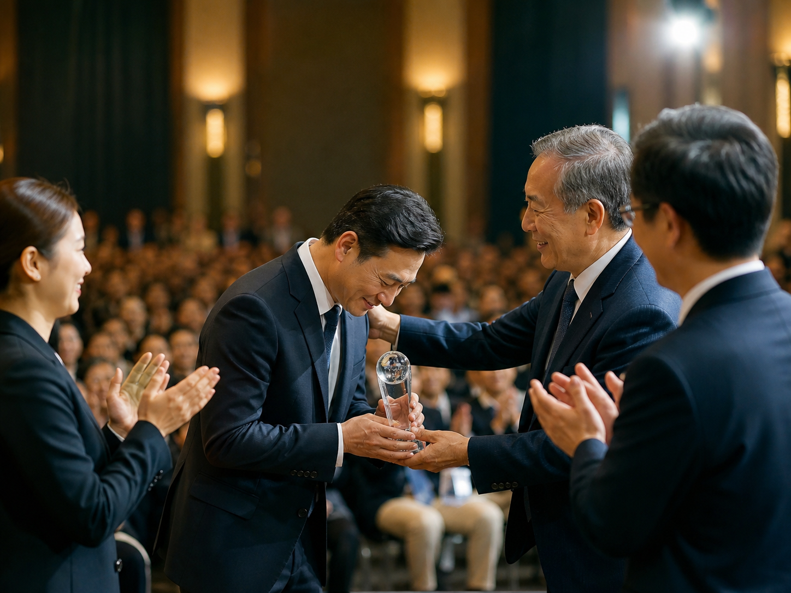

4/23,到群義房屋第一季的頒獎大會, 為 500 人的場次進行分享。
但這次深深打動我的, 是群義的企業宣言:
「群力行義,溫馨滿意; 與人為善,互為貴人。」
這段宣言, 剛好跟我準備的這場演講, 每一個具體方法都互相呼應。
很多時候, 我們會以為每天闡述的道理只是「心法」, 但心法其實就是方向。
它能對齊我們的動作, 並且給出具體的方法。
關鍵只在於, 你把它想得多深而已。
群力行義,是一群人一起成就對的事。
溫馨滿意：銷售是吸引不是推銷。
與人為善：利他就是最大程度的利己。
互為貴人：你怎麼對客戶,客戶就怎麼對你。
每一句宣言, 其實都是銷售系統裡最底層的邏輯。
再次感謝群義房屋的陳董事長、楊總經理, 惠瑛及所有協辦人員, 以及正一店長的引薦。
也謝謝每一位群義的夥伴, 在工作日當中, 這麼專心地聽完兩個小時的演講。
能讓每一位銷售顧問 都專心聆聽並從中學到東西,
我知道這不是公司的規定, 而是源於你們對於工作的熱忱,
以及對於自我成長的期待。
期待下一次, 繼續為大家延續整套的 「高單價無限成交系統」。

我也很榮幸, 能參與到柏璋的頒獎。
他是群義房屋第一季的全臺第五名, 業績做了 230 萬。
很感謝他在台上提及了我, 但我覺得最重要的是柏璋
做房仲已經十幾年了, 卻依然願意放下過去的習慣, 讓自己歸零。
每一次都重新學習, 每一次上課都認真聽, 每一份心得都持續回饋,
還一直回來複訓我的課程。
這才是最難能可貴的精神。
一個人的成就, 從來不是來自他已經會了多少, 而是來自他願意承認, 自己還可以再學多少。
謝謝群義的每一位夥伴, 也謝謝每一位在事業中 依然願意歸零、重新出發的人。
『帶著舊腦袋聽新內容,叫浪費; 帶著新腦袋聽舊內容,叫突破。』
你的業績卡住了嗎？
我也走過那段「心累」的路，所以我懂那種明明很努力，卻一直卡在同一關的感覺。
如果你想知道：
你的「業務原廠設定」，適合主動開發，還是穩定經營？
你真正卡住的地方，是「開發」、「開口」，還是「成交」？
企業團隊想提升成交力，可以怎麼設計內訓？
想學更多，或邀約企業內訓，歡迎從這裡認識我：
Instagram：eintaixin
個人官網